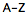
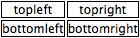
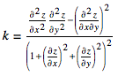
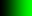
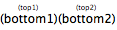

Toolbar/context menu
[Table] [Single feat]Audio element
[Table] [Single feat]Auto
document.createElement('audio').canPlayType
Interact
Audio element with 6 different sources (with MIME set)
Interact
Audio element with 6 different sources (no MIME set)
CSS3 Background-image options
[Table] [Single feat]Auto (m)
Modernizr test for: "backgroundsize"
Visual-square
background-clip: content-box;
Visual-square
background-origin: content-box;
Visual-square
background-size: 30px 30px;
CSS3 Border images
[Table] [Single feat]Auto (m)
Modernizr test for: "borderimage"
Visual-square
Separate properties:
border-image-source: url(caniuse_files/green5x5.png);
border-image-slice: 2;
Visual-square
Shorthand syntax: border-image: url(caniuse_files/green5x5.png) 2;
CSS3 Border-radius (rounded corners)
[Table] [Single feat]Auto (m)
Modernizr test for: "borderradius"
Visual-square
Canvas (basic support)
[Table] [Single feat]Auto (m)
Modernizr test for: "canvas"
Visual-square
Draw rect on canvas using fillStyle and fillRect
classList (DOMTokenList )
[Table] [Single feat]Auto
"classList" in document.body
Visual-square
Cross-Origin Resource Sharing
[Table] [Single feat]Auto
Instant XHR request on page that should permit it.
CSS3 Animation
[Table] [Single feat]Auto (m)
Modernizr test for: "cssanimations"
Visual-square
animation: staylime 60s infinite;
@keyframes staylime {
from { background-color: lime; }
to { background-color: lime; }
}
CSS3 Box-shadow
[Table] [Single feat]Auto (m)
Modernizr test for: "boxshadow"
Visual-square
Must be greenish, may not be entirely lime depending on the implementation.
CSS position:fixed
[Table] [Single feat]Interact
Test hereCSS Gradients
[Table] [Single feat]Auto (m)
Modernizr test for: "cssgradients"
Visual-square
linear-gradient(lime, lime);
Visual-square
radial-gradient(lime, lime)
CSS3 Opacity
[Table] [Single feat]Auto (m)
Modernizr test for: "opacity"
Visual-square
Test for opacity: 0
CSS3 Text-shadow
[Table] [Single feat]Auto (m)
Modernizr test for: "textshadow"
Visual
font-size: 25px;
color: white;
text-shadow: 25px 0 3px lime; position: relative;
left: -25px;
Visual
Multiple shadow test
CSS3 Transitions
[Table] [Single feat]Auto (m)
Modernizr test for: "csstransitions"
Interact
Green square must (briefly) appear on hover
5 second transition from left to right using cubic-bezier(0, 1, 1, 0);
CSS3 Colors
[Table] [Single feat]Auto (m)
Modernizr test for: "hsla"
Visual-square
Visual-square
dataset & data-* attributes
[Table] [Single feat]Auto
Test for 'dataset' in document.body and getting the correct value returned from a data-foo attribute.
Interact
Test hereDetails & Summary elements
[Table] [Single feat]Auto
Interact
(summary button)
(detail contents)
"(detail contents)" should be visible ONLY after clicking summary
Basic details element with summary and paragraph as children.
Server-sent DOM events
[Table] [Single feat]Auto
File API
[Table] [Single feat]Auto
Flexible Box Layout Module
[Table] [Single feat]Auto (m)
Modernizr test for: "flexbox"
@font-face Web fonts
[Table] [Single feat]Auto (m)
Modernizr test for: "fontface"
Geolocation
[Table] [Single feat]Auto (m)
Modernizr test for: "geolocation"
Auto
Test for getCurrentPosition, watchPosition and clearWatch in navigator.geolocation
Interact
Must provide LAT and LON info (may need to give permission first)
Test for navigator.geolocation.getCurrentPosition on which position.coords.latitude and position.coords.longitude are expected.
getElementsByClassName
[Table] [Single feat]Auto
Visual-square
Test if two divs were correctly retrieved using getElementsByClassName
Hashchange event
[Table] [Single feat]Auto (m)
Modernizr test for: "hashchange"
Visual-square
iframe with addEventListener('hashchange', function() {
document.body.style.background = 'lime';
}, false);
Session history management
[Table] [Single feat]Auto (m)
Modernizr test for: "history"
Auto
Test if history.pushState was successful
IndexedDB
[Table] [Single feat]Auto (m)
Modernizr test for: "indexeddb"
JSON parsing
[Table] [Single feat]Auto
Auto
Create a JS object, convert to JSON string, convert back to object and compare.
CSS3 Multiple backgrounds
[Table] [Single feat]Auto (m)
Modernizr test for: "multiplebgs"
Visual-square
background-repeat: repeat-x;
background-image: url(caniuse_files/green5x5.png), url(caniuse_files/green5x5.png), url(caniuse_files/green5x5.png), url(caniuse_files/green5x5.png), url(caniuse_files/green5x5.png), url(caniuse_files/green5x5.png);
background-position: 0 0, 0 5px, 0 10px, 0 15px, 0 20px, 0 25px;
CSS3 Multiple column layout
[Table] [Single feat]Auto (m)
Modernizr test for: "csscolumns"
Visual-square
column-width: 15px;
column-gap: 0;
Web Storage - name/value pairs
[Table] [Single feat]Auto (m)
Modernizr test for: "localstorage"
Auto
Test if getItem, setItem and removeItem work.
Web Notifications
[Table] [Single feat]Auto
Offline web applications
[Table] [Single feat]Auto (m)
Modernizr test for: "applicationcache"
querySelector/querySelectorAll
[Table] [Single feat]Auto
Auto
querySelector test on selector '[data-foo=bar] + *'
Auto
querySelectorAll test on selector '[data-foo=bar] + *'
SVG (basic support)
[Table] [Single feat]Auto (m)
Modernizr test for: "svg"
Visual-square
SVG in <object>
SVG effects for HTML
[Table] [Single feat]Visual
Text must appear blurry
SVG with feGaussianBlur filter on foreignObject
Inline SVG in HTML5
[Table] [Single feat]Auto (m)
Modernizr test for: "inlinesvg"
Visual-square
SVG SMIL animation
[Table] [Single feat]Auto (m)
Modernizr test for: "smil"
Visual-square
SVG with animate element inside a rect
Touch events
[Table] [Single feat]Auto (m)
Modernizr test for: "touch"
CSS3 Transforms
[Table] [Single feat]Auto (m)
Modernizr test for: "csstransforms"
Visual-square
transform: translate(30px);
CSS3 3D Transforms
[Table] [Single feat]Auto (m)
Modernizr test for: "csstransforms3d"
Visual-square
Parent:
perspective: 600;
perspective-origin: 0 200px;
Child:
transform: translate3d(-234px, 0, 0) rotate3d(0, 1, 0, -70deg);
Video element
[Table] [Single feat]Auto
Interact
Video with controls and all three formats available.
Interact
Video with controls and all three formats available (with MIME).
Web Sockets
[Table] [Single feat]Auto (m)
Modernizr test for: "websockets"
Web Workers
[Table] [Single feat]Auto (m)
Modernizr test for: "webworkers"
Auto
Create a new Worker using new Worker('worker.js');
Then, test postMessage and onmessage event.
Cross-document messaging
[Table] [Single feat]Auto (m)
Modernizr test for: "postmessage"
XMLHttpRequest 2
[Table] [Single feat]Auto
XHTML served as application/xhtml+xml
[Table] [Single feat]Auto
CSS Generated content
[Table] [Single feat]Visual
-

Element with CSS:
#gencontent:before {
content: 'A';
}
#gencontent:after {
content: 'Z';
}
CSS Table display
[Table] [Single feat]Visual
topleft
topright
bottomleft
bottomright

Should be 2x2 table
HTML5 form features
[Table] [Single feat]Visual
date/time/range/number widgets
MathML
[Table] [Single feat]Visual

PNG alpha transparency
[Table] [Single feat]Visual

Ruby annotation
[Table] [Single feat]Visual
(bottom1)(bottom2)

Elements should be stacked on top of each other
SVG filters
[Table] [Single feat]Visual
Visual-square
Must be green (not lime)
SVG with <feColorMatrix type="hueRotate" values="120"/>
Visual-square
SVG with <feFlood flood-color="lime"/>
CSS3 Word-wrap
[Table] [Single feat]Visual
abcdefghijklmnopqrstuvwxyz
Text should wrap
Visual
abcdefghijklmnopqrstuvwxyz
Text should overflow box
Visual-square
word-wrap: break-word;
calc() as CSS unit value
[Table] [Single feat]Visual-square
width: calc(10px + 20px);
Visual-square
height: calc(60px - 100%);
width: calc((100% / 2) + 15px - 0.5em);
border-right: calc(0.5em) solid lime;
CSS Grid Layout
[Table] [Single feat]Visual-square
Grid with two columns, two rows and three elements taking up space.
CSS3 Media Queries
[Table] [Single feat]Visual-square
CSS 2.1 selectors
[Table] [Single feat]Visual-square
Test for child ( > )selector
Visual-square
Adjacent sibling selector test ( + )
Visual-square
Attribute selector ( [role="none"] )
CSS3 Box-sizing
[Table] [Single feat]Visual-square
Data URLs
[Table] [Single feat]Visual-square
div with data URL as background image
New semantic elements
[Table] [Single feat]Visual-square
section, article, aside, hgroup, header, footer, nav tested for default "block" style.
CSS inline-block
[Table] [Single feat]Visual-square
CSS min/max-width/height
[Table] [Single feat]Visual-square
Visual-square
Visual-square
Visual-square
CSS3 object-fit/object-position
[Table] [Single feat]Visual-square
object-fit: contain
Visual-square
object-position: 30px 30px;
rem (root em) units
[Table] [Single feat]Visual-square
span with single character and font-size: 5rem;
SVG in CSS backgrounds
[Table] [Single feat]Visual-square
SVG in HTML img element
[Table] [Single feat]Visual-square
contenteditable attribute (basic support)
[Table] [Single feat]Interact
This element should be editable.
Div element with attribute contenteditable="true"
CSS3 selectors
[Table] [Single feat]Interact
Test hereDrag and Drop
[Table] [Single feat]Interact
Test hereWAI-ARIA Accessibility features
[Table] [Single feat]Text API for Canvas
[Table] [Single feat]Auto (m)
Modernizr test for: "canvastext"
WebGL - 3D Canvas graphics
[Table] [Single feat]Auto (m)
Modernizr test for: "webgl"
Visual-square
SVG fonts
[Table] [Single feat]Visual
Windsong font
TTF/OTF - TrueType and OpenType font support
[Table] [Single feat]Visual
Windsong font
OTF font test
Visual
Windsong font
TTF font test
WOFF - Web Open Font Format
[Table] [Single feat]Visual
Windsong font
Progress & Meter
[Table] [Single feat]Visual
Progress and meter widgets at 50%
Datalist element
[Table] [Single feat]Interact
Show "foo" and "foobar" as options when "f" is entered
Form validation
[Table] [Single feat]Interact
Form should show warning and NOT submit
MPEG-4/H.264 video format
[Table] [Single feat]Auto
Interact
Video, no MIME, no type attribute.
Interact
Video with source element
Interact
Video with source element and MIME set
Ogg/Theora video format
[Table] [Single feat]Auto
Interact
Video, no MIME, no type attribute.
Interact
Video with source element and MIME set
Interact
Video with source element
WebM/VP8 video format
[Table] [Single feat]Auto
Interact
Video, no MIME, no type attribute.
Interact
Video with source element
Interact
Video with source element and MIME set
Animated PNG (APNG) [unoff]
[Table] [Single feat]Auto
Test for second frame using Canvas element
Visual
Must animate
CSS Canvas Drawings [unoff]
[Table] [Single feat]Auto
'getCSSCanvasContext' in document
CSS Reflections [unoff]
[Table] [Single feat]Auto (m)
Modernizr test for: "cssreflections"
Visual-square
Web SQL Database [unoff]
[Table] [Single feat]Auto (m)
Modernizr test for: "websqldatabase"
Stream API [unoff]
[Table] [Single feat]Auto
Test for "getUserMedia" in navigator object
CSS Masks [unoff]
[Table] [Single feat]Visual
mask-image: url(caniuse_files/alpha.png);
CSS3 Text-overflow [unoff]
[Table] [Single feat]Visual
abcdefghijklmnopqrstuvwxyz
Should end with ellipsis
text-overflow: ellipsis;
CSS text-stroke [unoff]
[Table] [Single feat]Visual
green stroked text
text-stroke: 2px lime;
EOT - Embedded OpenType fonts [unoff]
[Table] [Single feat]Visual
Windsong font